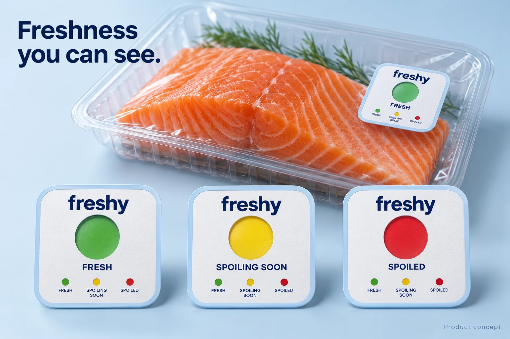

freshyFRESH
Fresh
Green marks the fresh stage.
A color-changing sticker concept for fresh-fish packaging. Designed to show three proposed stages of freshness.
Meet the sticker ↓In development. Performance still needs validation.

For fresh-fish suppliers and seafood retailers who want to help customers understand freshness and reduce unnecessary waste.
The proposed first version is for one fish product and one compatible packaging format.
Green marks the fresh stage.
Yellow marks declining freshness.
Red marks the spoiled stage.
Planned color meanings. Green is not a guarantee of food safety.
Begin with one fish product and packaging format. Sensor chemistry and performance need development and validation.
Stickers would arrive in rolls for suppliers to integrate into compatible packaging, with storage and application instructions.
Compare the indicator with the printed guide. Keep following storage and safe handling instructions.
The proposed first order is 1,000 stickers. Larger orders would follow the business pilot.
Price, order size, roll format and policies are proposals. Final terms depend on production and testing costs.
per sticker, proposed wholesale price
$300 for 1,000 stickers
The planned sensor changes color as freshness declines. Its chemistry and performance still require development and validation.
No. The first version would be calibrated for one fish product and packaging format.
Not initially. Suppliers would integrate it into compatible packaging.
No. Freshness indication cannot guarantee the absence of harmful pathogens or replace safe handling instructions.
No. The proposed sticker is single-use and replaced with each package.